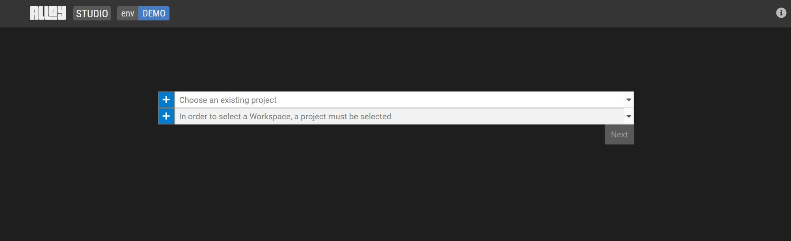
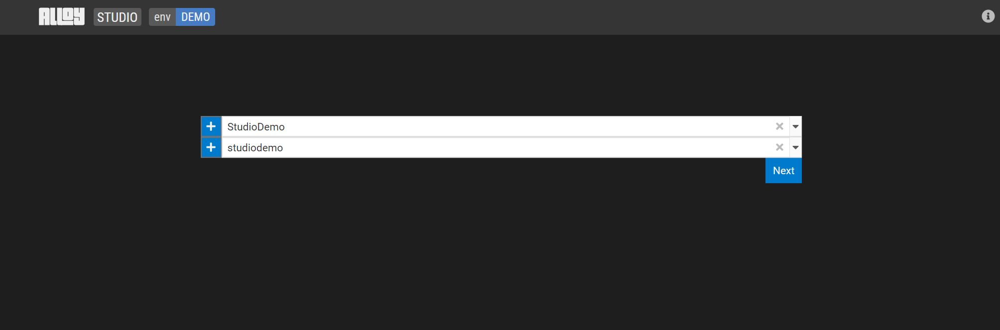

Create a workspace
Create a workspace
Start working on your data model by creating a workspace. Workspaces let users collaborate on the same project. A Workspace is a copy of a project which can be later merged back into the main project. To create a workspace:
Select an existing GitLab project or select + to start working on a new one.

Create (or choose) a workspace.

Click Next.